视频设备制作使用说明
* 该例程针对“视频设备”为例进行详解
㈠.制作
1.制作思路：
一个简单的视频设备软件，可以捕获影像以及录制清晰的AVI播放文件 ，当然也可以截取图片。
2.制作详解
（1）安装视频驱动
点击“视频驱动\zs211\Driver\Setup”文件，双击setup.exe如图（驱动-1）下一步，如图（驱动-2）等待几秒钟如图（驱动-3）下一步，这时我们等待的时间会长一些，不过不要急哦，如图（驱动-4）完成,打开我的电脑如图（驱动-5）。
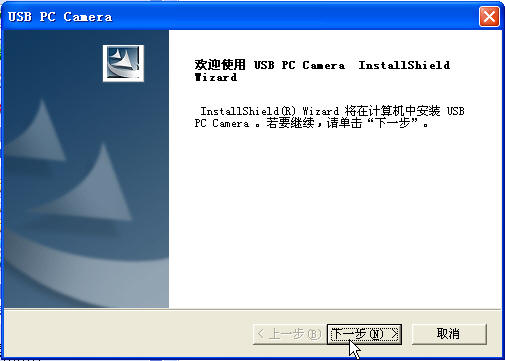
驱动-1
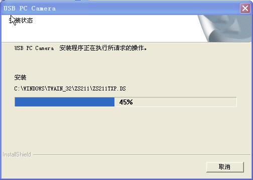
驱动-2
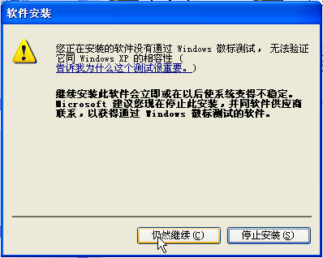
驱动-3
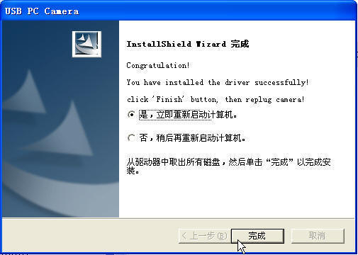
驱动-4
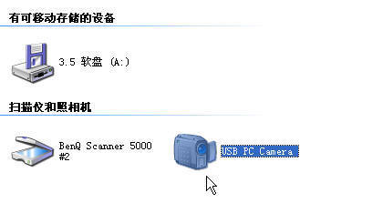
驱动-5
（2）程序界面设计
按照（图-1）所示添加窗口及组件，其中黑色部分为视频设备组件。
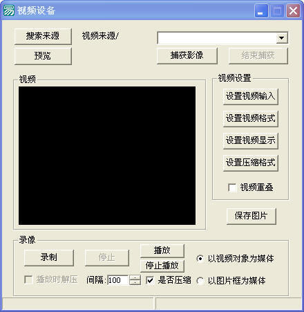
图-1
（3）搜索来源
首先在预览视频时要获取视频的来源，点“搜索来源”按钮进入按钮被单击事件，如（图-2） 。
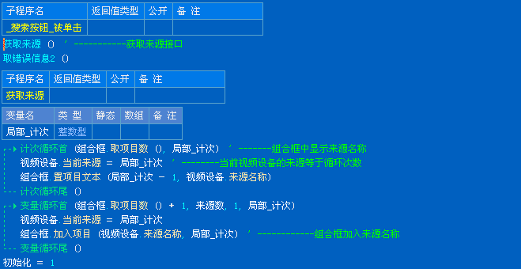
图-2
（4）预览
获取来源后预览视频，点“预览”按钮进入按钮被单击事件，如（图-3） 。
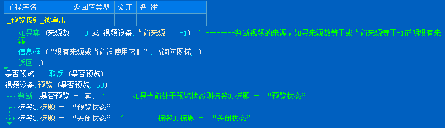
图-3
（5）捕获影像
预览图片时可以捕获看好的影像，点“捕获影像”按钮进入按钮被单击事件如，（图-4），捕获影像后选择要目录保存影像，如（图-5），
捕获之后我们找到保存的文件，如（图-6），播放捕获的影像，如（图-7）。
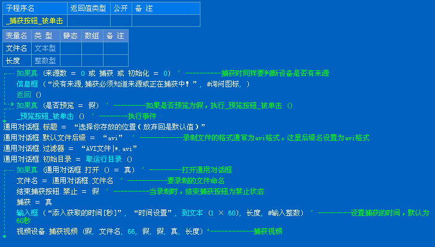
图-4
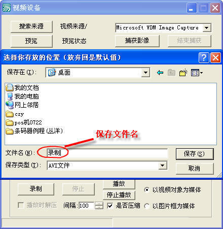
图-5
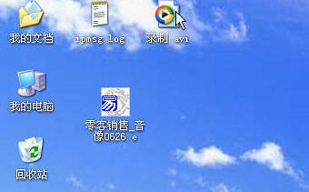
图-6
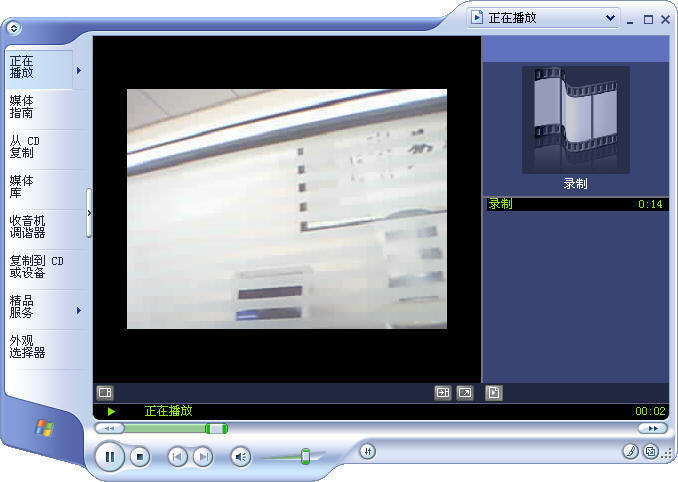
图-7
（6）结束捕获
捕获影像之后结束捕获影像，点“结束捕获”按钮进入按钮单击事件，如（图-8） 。
图-8
（7）录像
录像的原理跟捕获影像的原理相同，基本操作类似代码如（图-9），首先点击”搜索来源“ 按钮---“预览” 按钮--“录制” 运行结果按钮如（图-10），录完之后“停止” 按钮停止，可以“播放”按钮播放刚才录制的内容；如果您是第一次录制的话，程序会提示您如（图-11） 。
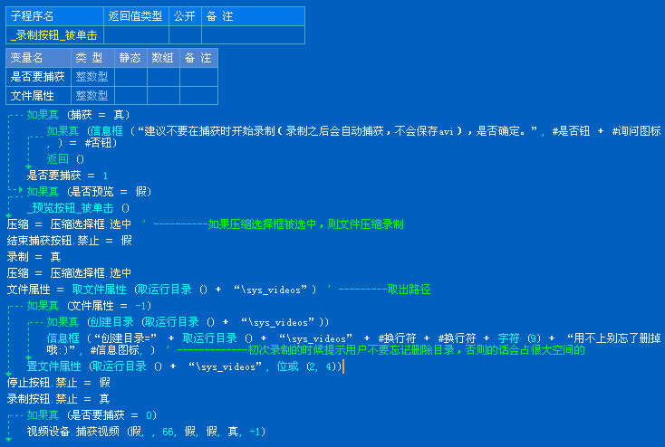
图-9
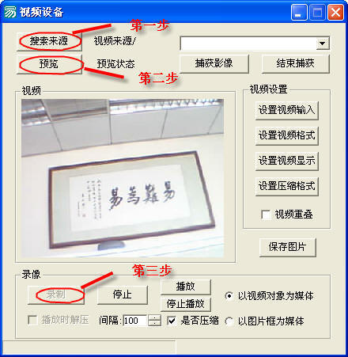
图-10
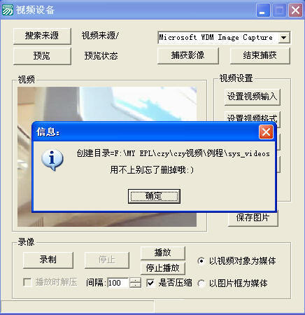
图-11
（8）其他功能
在搜索来源后可以对视频“设置视频输入”，“设置视频格式”，“设置视频显示”，“设置压缩格式”进行设置 ；列举：代码如（图-12），设置视频输入如（图-13），【其余部分设置类似，这里就不一一详细讲解，具体操作参照例程】 。
图-12
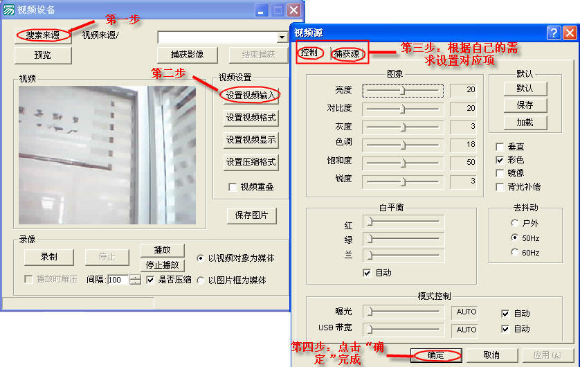
图-13
|
版权所有 大连大有吴涛易语言软件开发有限公司 电话:86-0411-88995831
传真:86-0411-88995834 |